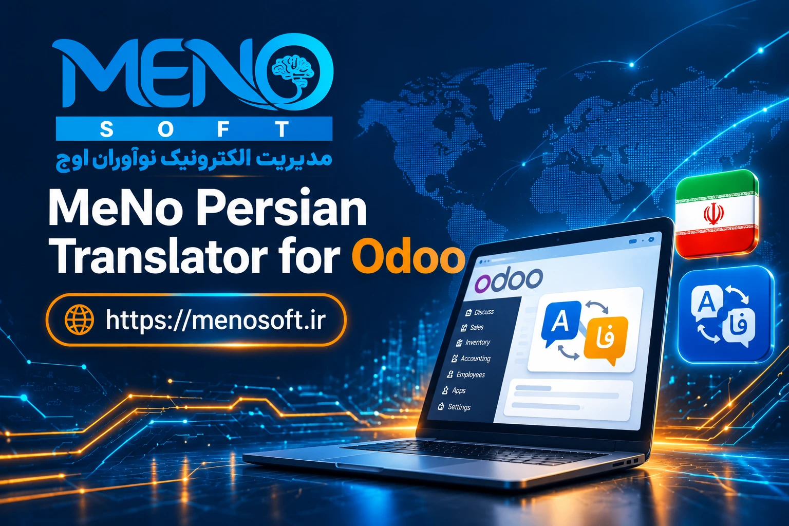

توسعه داده شده توسط MeNoSoft - مهدی نصرتی
یکی از بزرگترین چالشهای راهاندازی و نگهداری مِنو در سازمانها، اعمال یکپارچه، دقیق و بدون اختلال بستههای زبان فارسی است. ماژول MeNo Persian Translator زیرساختی مطمئن، فوقالعاده سریع و استاندارد برای خواندن و تزریق فایلهای .po فارسی به درون سیستم فراهم میکند.
این ماژول منطبق با تغییرات بنیادی موتور ذخیرهسازی دادههای ترجمهپذیر مِنو ۱۹ (ساختار JSONB در PostgreSQL) طراحی گردیده و بدون ریسک خرابی یا کندی پایگاهداده، فرآیند را تنها با یک کلیک انجام میدهد.

ایمپورت همزمان تمام فایلهای ترجمه بدون توقف سیستم و پردازش خطبهخط بهینه با حداقل مصرف منابع حافظه.
پشتیبانی کامل از فیلدهای چندزبانه مبتنی بر فرمت JSONB در دیتابیس بدون ایجاد رکوردهای تکراری در جداول ترجمه.
تشخیص وضعیت زبان فارسی در پایگاهداده و فعالسازی خودکار پکیج زبان در صورت غیرفعال بودن پیش از بارگذاری دادهها.
قابلیت انتخاب برای بهروزرسانی کامل ترجمهها یا حفظ تغییرات اصطلاحات سفارشیشده قبلی کاربر در پایگاهداده.
نمایش دقیق وضعیت فایلهای اسکنشده، فایلهای موفق و گزارش هرگونه ناسازگاری بدون نیاز به مراجعه به لاگ سرور.
محدودسازی کامل سطوح دسترسی و اکشنهای ویزارد به مدیران ارشد سیستم (تنظیمات ادمین) جهت حفظ ایمنی دیتابیس.
فرآیند بارگذاری تنها با ۳ گام ساده انجام میشود:
ماژول ابتدا وضعیت فعال بودن زبان fa_IR را در جدول res.lang بررسی کرده و در صورت نیاز آن را فعال میکند.
کلیه فایلهای .po استاندارد موجود در پوشه i18n_po با اعتبارسنجی امنیتی مسیرها (Path Traversal Protection) اسکن میشوند.
اصطلاحات ترجمهشده توسط توابع هسته مِنو در سیستم ثبت شده و گزارش نهایی در فرم ویزارد به کاربر نمایش داده میشود.
توسعه تخصصی ماژولها و راهکارهای جامع سازمانی مِنو
ارائهدهنده بستههای بومیسازی و سفارشیسازی مِنو ۱۹